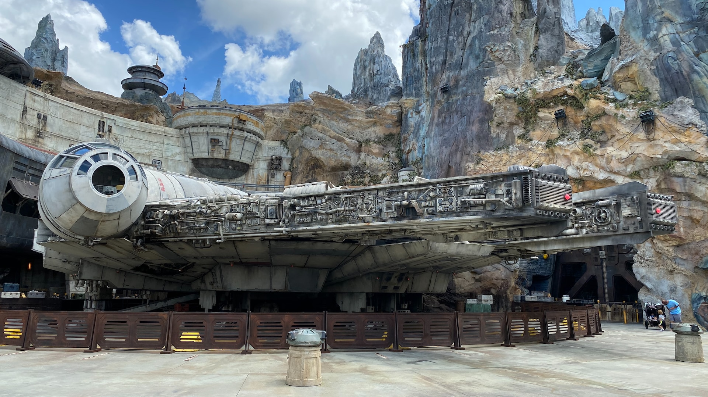

Star Wars: The Empire Strikes Back
Star Wars: The Empire Strikes Back is the second movie in the original trilogy and was released in 1980. This film is darker and more mature than A New Hope was; most consider The Empire Strikes Back the best film in the original trilogy. The Empire Strikes Back beat Jaws at the box office; Steven Spielberg bought an ad in Variety congratulating George Lucas on his success. In this film, we see more focus on the Force and its' philosophy. Yoda appears in this film as Luke Skywalker's mentor and guide to the ways of the Force. The film ends off with no resolution; the resolution is found in Return of the Jedi. John Williams delivers yet another brilliant soundtrack. The scope of the Battle of Hoth, while not as large as the space fights, do still provide a sense of size.
